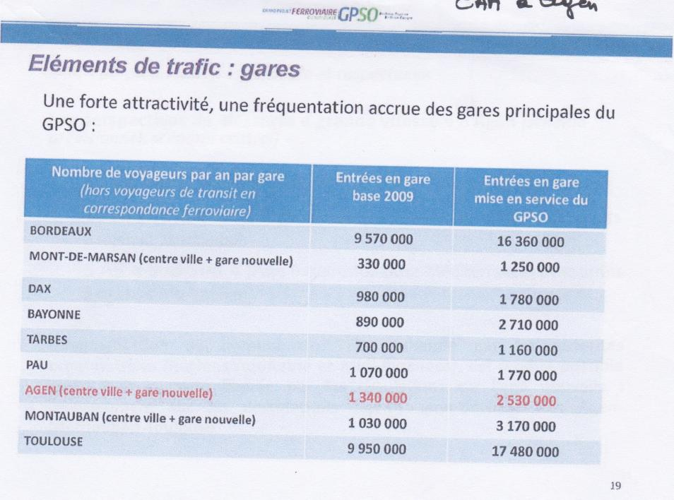
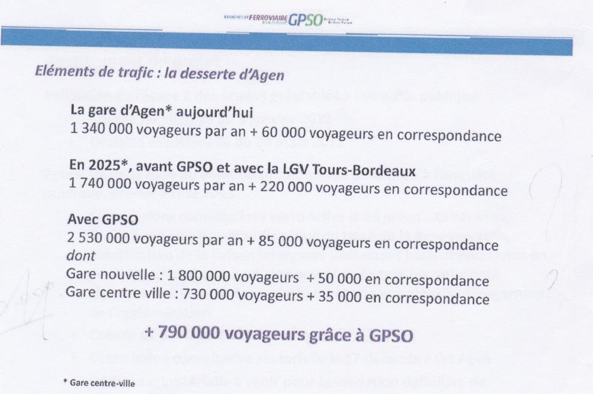
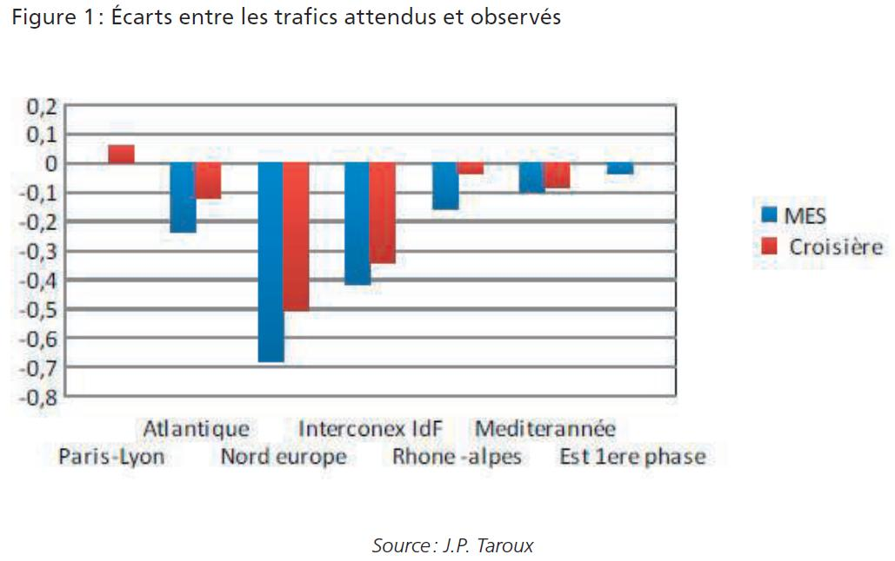

Les LGV attireront-elles plus de voyageurs ?
Ce qu'ils disent :
« Les lignes nouvelles Bordeaux-Toulouse et Bordeaux-Dax apporteront 5 millions de voyageurs supplémentaires. »
La part modale du ferroviaire progresserait alors fortement. 45 % des trajets entre la Haute-Garonne et l’Île-de-France se font en train : ce pourcentage passerait à près de 60 % avec la ligne à grande vitesse. De même, la part modale du ferroviaire doublerait entre la Gironde et la région sud : elle passerait de 13 % des trajets effectués en train à 26 %.
Vérifions les faits.
-
C’est la rengaine des promoteurs avant la construction d’une LGV, des voyageurs supplémentaires en grand nombre. Ci-dessous, les prévisions « surréalistes » faites par RFF pour justifier la construction d’une LGV.
Extrait des documents sources : présentation de RFF à la CAA d’Agen le 17/12/2012   Ce sont avec de telles surestimations de trafic que les promoteurs du projet GPSO arrivent à lui attribuer une rentabilité socio-économique tout juste acceptable. Le CGI (Conseil Général à l’Investissement) en charge de l’expertise du projet relève parmi ses principales faiblesses : « un projet à la valeur actualisée nette par euro investi limitée » et « une forte dépendance de la valeur actualisée nette à la réalisation du trafic prévu » (Source : Avis du Comissaire Général à l’Investissement sur le GPSO, CGI, 2018, page 6).Nombre de voyageurs par an par gare (hors voyageurs de transit en correspondance ferroviaire) Entrées en gare base 2009 Entrées en gare mise en service du GPSO BORDEAUX 9 570 000 16 360 000 MONT-DE-MARSAN (centre ville + gare nouvelle) 330 000 1 250 000 DAX 980 000 1 780 000 BAYONNE 890 000 2 710 000 TARBES 700 000 1 160 000 PAU 1 070 000 1 770 000 AGEN (centre ville + gare nouvelle) 1 340 000 2 530 000 MONTAUBAN (centre ville + gare nouvelle) 1 030 000 3 170 000 TOULOUSE 9 950 000 17 480 000 -
Voici les écarts constatés dans les bilans LOTI entre les prévisions de trafic présentés lors de l’enquête publique et les trafics constatés dans les 3 à 5 années suivant la mise en service d’une LGV.
En ordonnée (sur le côté) le coefficient multiplicateur, positif ou négatif.
Par exemple -0,5 veut dire que les trafics observés sont inférieurs de 50% aux prévisions.
Certaines lignes ont connu des trafics significativement inférieurs à ce qui était prévu, tant à la mise en service (MES) qu’en phase de croisière de l’exploitation : jusqu’à -50% en régime de croisière pour la LGV Nord et -35% pour l’interconnexion entre le Sud-Est et le Nord, située à l’Est de Paris.
Ces écarts sont considérables.
Dès 2008, la Cour des comptes dénonçait ces surestimations de trafic et constatait :
« les bilans a posteriori des lignes à grande vitesse mettent en évidence une rentabilité en général bien plus faible qu’espérée initialement en raison d’une sous-estimation des coûts et d’une surestimation du trafic assez systématiques » (Source : « Le réseau ferroviaire | Une réforme inachevée, une stratégie incertaine » Rapport Cour des comptes, 2008, page 84)
En 2022, Yves Crozet fait le même constat :
« Il n’est pas rare d’observer que les porteurs de projets gonflent les trafics attendus et sous-estiment les coûts de construction. » (Source : "Les métamorphoses du modèle économique de la grande vitesse ferroviaire", Yves Crozet, Bulletin de la Sabix, 2022, page 139.)